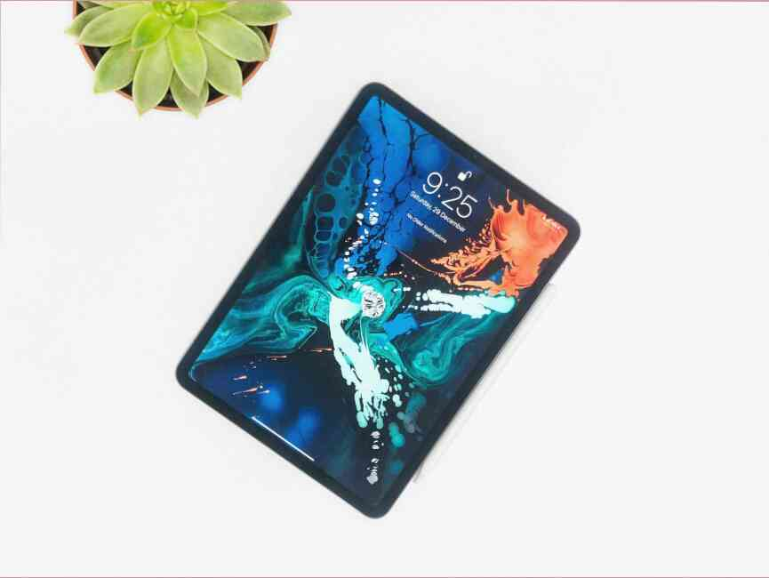

Récemment, j'ai testé la souris pour le jeu, qui est de conception unique se distingue parmi les podustavshih de jeux normes. Dream Machines DM1 FPS est simple, classique de la souris avec un très léger rétro-éclairé, décoré intéressant bouton pour modifier DPI.
Du point de vue de l'apparence, la simplicité est captivant, ce qui rend le gadget encore plus intéressant, c'est une des possibilités. Je vous invite donc à un examen de la DM1 FPS de Dream Machines élégante classiques sans geymerskogo de folie dans la la conception.
Lire aussi: Quelle souris pour le jeu choisir? Le classement du TOP 5 des meilleurs jeux souris
Minimaliste et design élégant
La souris est emballé dans une élégante boîte en carton avec un design minimaliste. A l'intérieur, vous trouverez également les instructions, et pour plus d'glaydy. Sur la boîte il ya une brève description des caractéristiques.
Visuellement, tout semble élégant. Dream Machines DM1 FPS a classique carénée, avec goût et décoré de rétro-éclairage de la roue de défilement. La souris est profilé pour les droitiers. J'ai testé du modèle, à blanc — Pearl White, cependant, au total, disponible le 8 différentes options de couleurs: du rouge au noir. En outre, chacun d'eux peut être mat ou brillant.
L'ergonomie et la facilité d'
Une prise en main confortable, souvent, n'est pas moins important que la qualité du capteur. Même le meilleur, le détecteur ne fonctionne pas, si périphériques tout simplement pas rester dans la main. La forme de la coque DM1 FPS fournit assez d'espace pour un grand d'un doigt et de haut relief bosse permet de facilement placer les os de metacarpe.
Souris Dream Machnes fonctionne très bien avec la capture de Palm Grip. Les doigts et les os de metacarpe s'inscrivent parfaitement dans son profil. Par conséquent, le profil de la Dream Machines DM1 FPS adapté à la plus populaire type de capture.
Lire aussi: Comment choisir une souris? La capture de la paume, de la griffe ou du bout des doigts?
La périphérie est équipé de trois grands pieds, qui élèvent un peu au-dessus de la surface, en assurant la meilleure glisse. Le matériau dont ils sont faits, fonctionne très bien glissants les surfaces de bureaux.
Ne pas forcer la main
Dans les jeux de FPS vitesse est important de mouvements, qui se compose de compétences d'un joueur en combinaison avec un équipement de qualité. DM1 FPS de Dream Machines facile et stable grâce à son poids, réparti sur toute sa surface (83 g sans le câble).
Avec un tel poids, nous avons le bon sentiment de mouvements, qui sont fiables, précis et conduisent à une moindre fatigue des mains pendant de nombreuses heures de jeu.
Souris avec un imperceptible câble
Le plus grand avantage d'un modèle est de les dissimuler des câbles. Souvent, les joueurs sont fatigués des ennuis avec le fil utilisent un support spécial. Dans la DM1 FPS, vous pouvez renoncer à l'investissement dans ces accessoires.
Pendant l'utilisation d'un cordon n'empêche pas, et la facilité d'oublier sa présence. En outre, il est durable et flexible (tuyau tressé, d'un diamètre de 3,5 mm, long, 1,8 m, avec le connecteur d'USB).
Il y a 6 boutons programmables
La souris Dream Machines DM1 FPS a 6 boutons programmables. Les principaux travaillent doux et élastique, le volume de clics, vous pouvez déterminer que la moyenne. Fait intéressant, entre la droite et la gauche boutons entendre une petite différence dans le son.
L'emplacement des boutons est très bien adapté pour les fans de tir. Ils sont inférieurs à la norme analogues, ce qui signifie plus commode transition entre eux pendant les jeux. Eux-mêmes les touches fonctionnent en douceur, avec les notables et calme de sauter. À l'origine, en cliquant plusieurs fois, vous pouvez passer par hasard le rouleau, mais après, comment sentez la souris dans la main, le problème disparaît.
Les boutons latéraux sur le côté gauche, facilement accessible et facile à utiliser. Clic superficielle. Le bouton de changement de DPI est également caractérisé par un court et doux un clic.
DM1 FPS en termes de commutateurs est également conforme à la FPS. Les touches résisteront à 20 millions de clics garantis par des interrupteurs à Huano. Le bouton est caché sous le rouleau, facile d'atteindre le même résultat. Comme à rouleaux, et les boutons latéraux travaillent sur les contacts TTC (dans le cas des touches latérales durée de vie est de 3 millions de clics).
Capteur optique PixArt 3389
Si le matériel est techniquement faible, même surhumaine de concentration et de compétences ne va pas aider. Non seulement l'agilité le joueur, mais le cœur de la périphérie de contribuer à la réussite dans les jeux.
Souris de gamer Dream Machines DM1 FPS possède l'un des meilleurs capteurs optiques PixArt 3389, qui offre un cadre agréable, doux travail de curseur bas LOD (configurable) et l'absence de phénomènes tels que l'accélération, l'interpolation ou la gigue.
Tout cela se résume à assurer que rien n'est perdu lors de la très dynamique, les mouvements.
Le niveau optimal de LOD
La situation, quand le tir parfait dans la tête a détruit le mouvement incontrôlé de la souris, est un problème commun. L'élimination de ces phénomènes est assurée par un niveau optimal de LOD. Plus précisément, la distance de séparation, et il est défini par la hauteur après la levée de la souris, elle arrêtera de lire la position.
LOD dans la DM1 FPS est à un niveau décent (1,8 mm), ce qui fournit un contrôle complet sur chaque mouvement, même dans le cas de son accidentelle de levage.
Pas d'interpolation
L'interpolation est la génération artificielle de pixels lorsque vous déplacez le curseur. Son objectif est d'augmenter les vrais valeurs PPP par l'envoi de fausses données sur l'état de la souris. La présence de l'interpolation en conséquence, conduit à une réduction de la précision de déplacement du pointeur. Ce phénomène est particulièrement souhaitable dans les jeux FPS.
Le test d'interpolation Dream Machines DM1 FPS montré la présence de seulement la plus haute résolution de 16 000 DPI. Pour les bas niveaux de DPI: 400, 800, 1600, 2400 ou 4800 nous n'avons pas besoin de s'inquiéter sur l' la production pixels.
Le manque d'interpolation pour des valeurs faibles, DPI, une solution typique pour les jeux FPS (par exemple, avec Overwatch, les joueurs utilisent 800-100 DPI), ce qui élimine tout problème avec la précision d'affichage des mouvements de la périphérie.
Test de la gigue et la fréquence
Le test standard de détection de bruit est de dessiner plusieurs lignes pour chacune des fréquences. Dans le cas de la DM1 FPS phénomène de gigue n'apparaît pas, même la plus haute résolution de 16 000 points par pouce.
Cela signifie que les problèmes avec l'indicateur de saut ici ne se produit pas, ce qui est particulièrement important pour les tireurs. Bien sûr, aux plus hauts niveaux de DPI à partir de 12 000 points par pouce (le plus probable n'est pas utilisé), il est difficile de retenir un indicateur lisse et le déterminer, il ya du bruit ou non.
J'ai également passé le test de la fréquence de transmission des données à l'aide d'un programme Mouse Rate Checker. Si une fréquence de 1000 Hz résultats hésité à 1000 Hz. Des rapports sur les USB sont stables.
Le logiciel Dream Machines DM1 FPS
Un logiciel simple et si intuitive, ce qui ne cause pas de problèmes, même manquant russe de l'interface (anglais et allemand).
Ici, nous trouvons les fonctionnalités suivantes pour les paramètres:
- La fonction des touches à chaque bouton peut être reprogramme.
- L'éditeur de macros — créer des macros.
- La fréquence des rapports: 4 de l'option de changement de la fréquence de l'enquête (125, 250, 500, 1000 Hz).
- Paramètres système: la vitesse de la souris, double-clic, la vitesse de défilement.
- DPI: choisir l'un des 6 niveaux: 400, 800, 1600, 2400, 4800, un maximum de 16 000.
- La gestion du rétro-éclairage: 4 options (Statique, la Respiration, le Néon et Désactivée).
Un total de
Le nombre de faible coût souris de jeu sur le marché est énorme. Entre les différents modèles et les fabricants il n'y a pas beaucoup de différences, il est donc facile de se perdre. Souvent, un seul petit détail, est une caractéristique importante pour une sorte de modèle, et peut être le motif de son choix.
Il est peine d'acheter?
Dream Machines DM1 FPS — c'est la souris qui répond aux exigences des joueurs, tireurs. Pour un prix d'environ 48 $ (3500 rv), nous avons: l'offshoring, une marque de confiance, d'un capteur de qualité, les boutons et la facilité d'utilisation. Tout cela est renforcé par la forme de gadget et d'un câble souple.
Examen de la Dream Machines DM1 FPS — vidéo
Encore plus de révisions de lire les premiers sur notre site
Source de l'article - ICI...


Laisser un commentaire